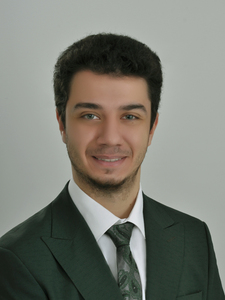

Ankara, Türkiye · Open to AI / ML roles
I build AI systems that have to work beyond the notebook.
Software & AI Engineer with 3+ years of experience across agentic systems, machine learning, simulation, anomaly detection, computer vision, LLM systems and explainable AI. My recent public work focuses on test-driven code migration, production-oriented banking ML, reproducible interpretability, evidence-grounded RAG, human–agent decision workflows and cloud/data engineering.
- Python-first engineering
- Research + production mindset
- English-fluent collaboration

Software + AIEngineering / Research
AGENTICMigration + Decision Systemsbounded loops · rule memory · human review
ML SYSTEMSRisk + Production AIvalidation · governance · cloud · monitoring
SELECTED WORK
Engineering across models, agents, data and systems.
I like projects where the difficult part is not merely producing a model output, but making the surrounding workflow inspectable, testable, recoverable and measurable.
01Agentic AI · Code Migration
Agentic Migrator
A deterministic-first migration platform that applies source-preserving structural transformations, tests candidates in bounded sandboxes, escalates failures to an optional LLM repair loop, and promotes successful learned rules through governed memory rather than blindly rewriting repositories.
Agentic AIASTGit WorktreesSandboxRule GovernanceCI
NEWAgent Evaluation · Reliability
Agent Reliability Lab
A framework-independent evaluation and CI quality-gate platform for recorded AI-agent traces. It scores tool selection, argument correctness, trajectory order, evidence coverage, latency/cost budgets and human escalation, then emits structured failure diagnostics and standalone reports.
Agent EvalsTool CallingFailure TaxonomyCI GatesPythonDocker
02Global Banking · Production ML
Banking Risk ML Platform
A synthetic end-to-end risk decision platform spanning out-of-time validation, ROC/PR/KS/lift/calibration, expected-loss-aware thresholding, champion–challenger and shadow evaluation, delayed labels, drift monitoring, human review and cloud deployment patterns.
PythonSQLPySparkXGBoostLightGBMVertex AI
03LLM Interpretability · Reproducible XAI
Struct-XAI Platform
A compact interpretability platform for tracing candidate decisions across transformer layers with explicit first-token margin semantics, controlled deletion/replacement interventions, activation patching, quantitative intervention effects, experiment provenance and cross-run explanation stability.
PyTorchTransformersLogit LensActivation PatchingProvenanceStability
04LLM Systems · RAG · Evaluation
RAG Document Intelligence
An evidence-grounded document system with persistent ingestion, hybrid word/character sparse retrieval, ranked retrieval evaluation, zero/one/few-shot benchmarking, citation rejection, claim-to-evidence tracing and quarantine of high-risk instruction-like retrieved content.
RAGMRR / nDCGFew-shot EvalEvidence PolicyFastAPIDocker
05Human–Agent AI · FinTech
Human–Agent Decision & Financial Crime Labs
Portfolio systems for AI-assisted onboarding and financial-crime review: explicit escalation policy, evidence provenance, reviewer queues, automation-bias evaluation, tamper-evident audit trails and service metrics that measure the interaction around a model—not only model accuracy.
Human-in-the-loopAgentic WorkflowsFinTechResponsible AI
06Reinforcement Learning · Simulation
Computer Generated Forces & Multi-Aircraft Simulation
Reinforcement-learning and simulation components for autonomous aircraft behavior: scenario initialization, target logic, kill/reset handling, repeatable experiment logging and evaluation metrics.
PythonPyTorchGymnasiumStable-Baselines3JSBSim
07Applied ML · Time Series
Time-Series Anomaly Detection
End-to-end anomaly-detection pipelines covering preprocessing, windowing, reconstruction scoring, statistical thresholding, architecture comparison and failure analysis over unlabeled engineering time series.
VAECNN-LSTMTCN-LSTMPyTorch
08Computer Vision
Real-Time Smart Sleep Pose Estimation
YOLOv8-based undergraduate capstone trained on 14,715 images and evaluated at approximately 0.978 mAP for real-time sleep-pose recognition.
YOLOv8OpenCVReal-time CV
M.SC. RESEARCH · 2026
Struct-XAI
Compact, inspectable interpretability for instruction-tuned LLMs.
My thesis work studies model behavior through candidate-aware decision traces, span deletion and replacement, layer-wise margins, sign-flip analysis and activation patching. The public platform now also records quantitative intervention effects, experiment fingerprints and cross-run stability instead of treating a heatmap alone as evidence.
The research evaluation uses compact instruction-model tasks to expose model-specific blind spots, decision instability and scaling behavior while keeping methodological limits explicit.
XAILLMsActivation PatchingIntervention EvaluationReproducibility

EXPERIENCE
From model prototypes to engineering workflows.
Sep 2023 — Present
Software & Design Engineer — AI and Big Data
Turkish Aerospace Industries (TUSAŞ / TAI) · Ankara
- Develop AI and simulation software for autonomous behavior, data analysis and engineering decision support.
- Build explainability workflows combining model outputs, action traces, decision logic and attribution methods.
- Prototype RAG and agentic workflows for requirement analysis, source tracing and knowledge retrieval.
- Build modular Python systems for simulation, visualization, ONNX integration, experiment tracking and technical documentation.
EDUCATION
Engineering foundation, AI specialization.
Yıldız Technical University
M.Sc. in Computer Engineering · GPA 3.74 / 4.00
Thesis: Struct-XAI — Compact Interpretability Pipeline for Turkish LLMsAnkara University
B.Sc. in Electrical & Electronics Engineering (English) · GPA 3.71 / 4.00
Computer vision capstone: real-time sleep pose estimation with YOLOv8TOOLKIT
Built for applied AI work.
AI / ML
PyTorch, scikit-learn, XGBoost, LightGBM, deep learning, LLMs, RAG, agentic systems, XAI, anomaly detection, computer vision and model evaluation.
Data / Software / Cloud
Python, SQL, PySpark, Pandas, NumPy, C/C++, Git, Linux, Docker, APIs, testing, CI, PostgreSQL, Redis, Kubernetes, BigQuery and Vertex AI labs.
Decision Systems
Human-in-the-loop workflows, rule engines, migration systems, risk policies, model governance, Gymnasium, Stable-Baselines3, JSBSim, ONNX and multi-agent systems.